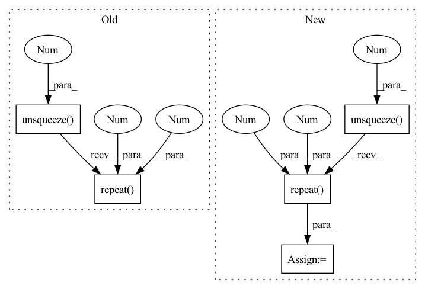

Pattern ID :2291
Before Change
m_candidate_loss = F.binary_cross_entropy(tar_pred_prob_selected, candidate_gt_selected, reduction=reduction)
offset_pred = torch.cat([dx.unsqueeze(2), dy.unsqueeze(2)], dim=2)
offset_loss = F.smooth_l1_loss(offset_pred[candidate_gt.bool().unsqueeze(2).repeat(1 , 1, 2 ) ].view(-1, 2),
offset_gt,
reduction=reduction)
After Change
batch_size, N, _ = tar_candidate.size()
// pred prob and compute cls loss
feat_in_prob = torch.cat([feat_in.unsqueeze(1).repeat(1 , N, 1 ) , tar_candidate], dim=2)
tar_candit_prob = self.prob_mlp(feat_in_prob).squeeze(-1) // [batch_size, self.N_tar]
_, indices = tar_candit_prob.topk(self.M, dim=1)
// select the M output and gtIn pattern: SUPERPATTERN
Frequency: 4
Non-data size: 5
Instances Fragment ID: 9752192
Project Name: henry1iu/tnt-trajectory-prediction
Commit Name: f39d0655e9e763f4dd61411259fdd4d214f6f34d
Time: 2021-04-09
Author: liu.jb.henry@gmail.com
File Name: core/model/layers/target_prediction.py
M Class Name: TargetPred
N Class Name: TargetPred
M Method Name: loss(6)
N Method Name: loss(6)
M Parent Class: nn.Module
N Parent Class: nn.Module
M File Name: core/model/layers/target_prediction.py
N File Name: core/model/layers/target_prediction.py
M Start Line: 92
M End Line: 107
N Start Line: 93
N End Line: 112
Before Change
visual_emo_vecs = self.affineVisual(text_emo_vecs)
audio_emo_vecs = self.affineAudio(text_emo_vecs)
text_emo_vecs = text_emo_vecs.unsqueeze(0).repeat( batch_size, 1 , 1 )
visual_emo_vecs = visual_emo_vecs.unsqueeze(0).repeat(batch_size, 1, 1)
audio_emo_vecs = audio_emo_vecs.unsqueeze(0).repeat(batch_size, 1, 1)
text_attn_feature = self.attention(output_text, text_emo_vecs)After Change
output_text, _ = self.RNNs[0](X_text)
output_text = output_text[:, -1, :]
text_emo_vecs_origin = self.textEmoEmbs(torch.LongTensor(list(range(self.num_classes))).to(self.device))
text_emo_vecs = text_emo_vecs_origin.unsqueeze(0 ).repeat( batch_size, 1 , 1 )
text_attn_weights = self.attention(output_text, text_emo_vecs)
logits = text_attn_weights if logits is None else logits + text_attn_weights
if "a" in self.modalities: Fragment ID: 9752181
Project Name: wenliangdai/modality-transferable-mer
Commit Name: b0e565d11d6b3bf9f65fb1dcbdc8c641a2bc8054
Time: 2020-06-10
Author: wenliang.dai.1995@gmail.com
File Name: src/models/temp.py
M Class Name: EmotionEmbAttnModel
N Class Name: EmotionEmbAttnModel
M Method Name: forward(4)
N Method Name: forward(4)
M Parent Class: nn.Module
N Parent Class: nn.Module
M File Name: src/models/temp.py
N File Name: src/models/temp.py
M Start Line: 53
M End Line: 79
N Start Line: 70
N End Line: 96
Before Change
for i in source_ids]
source_alphas = F.softmax(source_alphas)
output_moe = sum([ alpha.unsqueeze(1).repeat(1 , 1 ) *
F.softmax(classifier_outputs[id], dim=1)
for alpha, id in zip(source_alphas, source_ids)])
return output_moeAfter Change
classifier_outputs = [self.classifiers[i](encodings) for i in range(self.num_sources)]
source_ids = range(self.num_sources)
source_alphas = [-self.mahalanobis_metric(encodings,
self.domain_encs[i], i).unsqueeze(0 )
for i in source_ids]
source_alphas = F.softmax(torch.cat(source_alphas, dim=0), dim=0) // n_source x bs
output_moe = sum([ source_alphas[j].unsqueeze(1).repeat(1 , 1 ) *
classifier_outputs[j] for j in source_ids])
return output_moe
Fragment ID: 9752158
Project Name: aamini/chemprop
Commit Name: cf8ea2e781c32716964835d39a9cc4562c75b677
Time: 2018-10-28
Author: yangk@mit.edu
File Name: moe.py
M Class Name: MOE
N Class Name: MOE
M Method Name: forward(2)
N Method Name: forward(2)
M Parent Class: nn.Module
N Parent Class: nn.Module
M File Name: moe.py
N File Name: moe.py
M Start Line: 114
M End Line: 125
N Start Line: 142
N End Line: 151